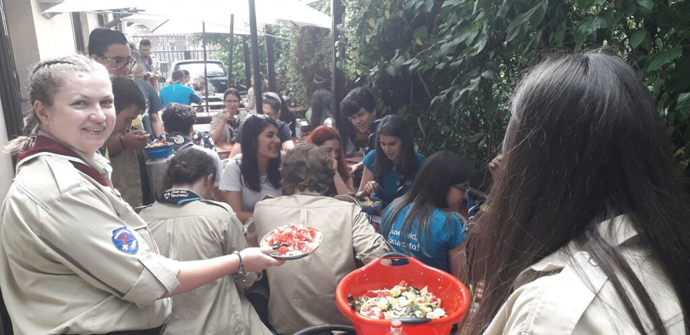

Ziua Cetății 2019

Ce începe cu o prietenie bună între cercetași are ca limită cerul. Cel puțin asta mi-am zis când am realizat că, pe baza prieteniilor dintre cercetași, se poate ajunge la prietenii la nivel de centru local. Așa a luat naștere Ziua Cetății de anul acesta. O masă, în Craiova. O idee. 3 săptămâni mai târziu i-am întâmpinat pe craioveni la gară.
O cetate de șefi și șefe, rezultatul multor seri de muncă, proiectul meu de suflet.
A venit ziua de sâmbătă, o zi magică pentru mine, dar și pentru ceilalți. Cetatea și-a deschis porțile larg. Cred că cea mai frumoasă amintire a fost de la mâncatul salatei făcute tot de noi, rând pe rând, când parcă eram toți din același centru local. Așa se simțea, mai ales când am strigat toți toate strigătele pe rând, împreună.
Și cum a început, așa s-a și terminat. Dar Cabana Craiova continuă. Stați să vedeți când vine Cabana peste Craiova!
Scrio, explorator (care a fost șefa la tot 😉 )
_________________________________________________________________
Ziua Cetății a fost o experiență uimitoare pentru cercetașii din Craiova. Socializarea și prietenia sunt doi factori importanți ai vieții, iar cercetășia este nelipsită de acești doi giganți.
Totul a început cu ajungerea în București, unde cercetașii din centrul local Cabana Scout ne-au așteptat cu brațele deschise și făcând cunoștință cu toții am început plimbarea prin București. Ziua a trecut repede, iar a doua zi, pe 29 iunie, Cetatea și-a deschis porțile pentru cetele ce aveau să ne încânte. Eu am supravegheat mâncarea pentru regi și regine. O salată a fost pregătită de toate cetele, care, pe rând, au tocat roșii mari cât degetul, ardei lungi și am privit cum fiecare patrulă mănâncă mai mult decât taie… Am spus glume, am cântat și am râs. Salata a fost gata repede și am mâncat cu toții, încheind evenimentul cu strigăte și o chităreală în parcul Carol I, unde ne-am făcut omizi jucând Twister
În ultima zi am avut o ultimă întâlnire cu noii prieteni și am plecat spre gară la fel de veseli cum am venit, unde ne aștepta trenul spre casa noastră, Cetatea Băniei
Fusei aici
Făcui asta
Laur, explorator, CL Craiova